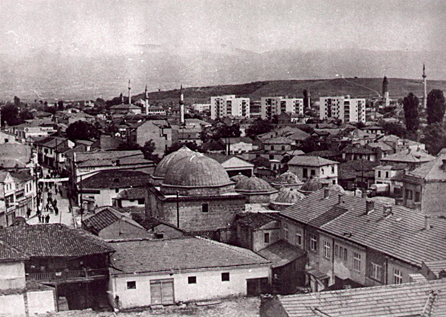
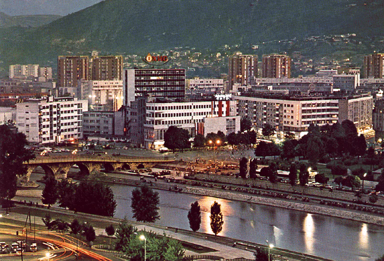

Place
- Scénario
- Dimitrie Osmanli, Simon Drakul
- Caméra
- Kiro Bilbilovski
- Année
- 1964
- Durée
- 00:06

Vue de la ville, avec la tour de l'Horloge à droite et la mosquée Gazi Isa Bey à gauche, avec le quartier « Saat Kula ». (années 1940)

Le pont en béton près de l'actuel hôtel « Grand ». À l'arrière-plan, la forteresse de Skopje - Kale. (années 1950)

Panorama de Skopje. (années 1950)

Panorama de Skopje. Au premier plan, le pont en béton (près de l'actuel Grand Hôtel) ; à l'arrière-plan, le pont de pierre, le Cercle des officiers et la Banque nationale. En haut à droite, la forteresse de Skopje - Kale. Le quai est aménagé en promenade et en chaussée, avec de la verdure entre les deux. (années 1950)

Vue du pont en béton (près de l'actuel Grand Hôtel). Au premier plan, le quartier Pajko. À l'arrière-plan, la forteresse de Skopje - Kale et, à droite, la mosquée Mustafa Pacha. (années 1950)

Skopje, années 1950, avec de nouveaux immeubles. Au milieu, l'emplacement de l'actuel Marché vert.

Panorama de la ville de Skopje. Au premier plan, la place de la Liberté. La rue vers le Vardar est la « Vasil Glavinov ». Au premier angle de la place, l'entrée de l'école primaire « Goce Delčev ». - années 1950

La place « Sloboda ». À l'arrière-plan, le Cercle des officiers et la Banque nationale. - années 1950

Le centre de Skopje avant le séisme - vers 1960.

Vue aérienne panoramique du centre de Skopje. La place avec le Cercle des officiers, la Banque nationale et la Chambre de commerce. À droite, la poste centrale ; en bas à gauche, le toit du Théâtre national. La photo date des années 1950.

Photo panoramique du centre de Skopje, - années 1950

Vue aérienne du centre-ville avant le séisme - 1963. Entre les tours (en haut à droite), où se trouve aujourd'hui le centre commercial, on voit l'église « Tsar Constantin et Tsarine Hélène ».

Panorama d'une partie de l'ancien bazar de Skopje, années 1950.

Vue d'une partie du Bit Pazar et de l'ancien bazar. Au-dessus, on voit la mosquée Mustafa Pacha. (années 1950)

Vue du centre de Skopje. Le pont de pierre sert encore à la circulation. La photo a été prise peu après le terrible séisme du 26 juillet 1963.

Skopje en 1968. L'emplacement de l'actuel centre commercial municipal.

Photo panoramique du centre-ville. La place sert encore de parking pour les véhicules.
(années 1960)

Panorama du centre-ville avec l'aménagement du Vardar, photographié depuis la forteresse de Skopje - Kale. (années 1970). Au premier plan, le pont de pierre, le grand magasin Pelister et d'autres bâtiments.

Vue depuis la forteresse de Skopje - Kale vers le centre de Skopje. La promenade de la rive droite du Vardar est noire de monde. (années 1970)

Vue depuis la forteresse de Skopje - Kale vers le centre de Skopje. (années 1970)

Vue de la rive gauche du Vardar, juste à côté du pont de pierre. En bas de la photo, une partie de l'église Saint-Démétrius. (années 1970)

Vue de la rive gauche du Vardar, juste à côté du pont de pierre. En bas de la photo, une partie de l'église Saint-Démétrius. (années 1980)

Panorama de Skopje. Au premier plan, le petit parc « La Combattante ». En bas à gauche, une partie de l'hôpital municipal et une partie du bâtiment de l'Assemblée. - années 1980.

Le parc « La Combattante » avec le centre commercial municipal et des immeubles d'habitation et publics de Skopje. - années 1980.

Vue du boulevard et du pont « Goce Delčev » avec l'échangeur au premier plan. À l'arrière-plan, le Centre de télécommunications et une partie de l'ensemble « Gradski zid ». (années 1980)

Vue du centre-ville. Au premier plan, une partie des banques, le pont « Revolucija » et le théâtre. À l'arrière-plan, le pont en béton, le pont de pierre et le Centre de télécommunications - années 1980.

Vue du centre-ville depuis le toit de l'actuel Institut des finances. Au loin, le pont de pierre. À droite sur la carte postale, l'actuel théâtre et, au-dessus, la silhouette de la forteresse de Skopje - Kale - années 1980.

Skopje à la fin des années 1970. Le pont près de l'actuel hôtel « Grand ». À gauche se dresse l'immeuble de la Radio-Télévision macédonienne ; à droite, celui de l'actuel Office des paiements.

Panorama de Skopje depuis la pente du mont Vodno. Au premier plan, l'hôtel « Panorama ». (années 1980)

Panorama de Skopje la nuit, depuis les pentes du mont Vodno. (années 1980)

 Aqueduc4 cartes postales
Aqueduc4 cartes postales Kale30 cartes postales
Kale30 cartes postales Ponts60 cartes postales
Ponts60 cartes postales Quai58 cartes postales
Quai58 cartes postales Place46 cartes postales
Place46 cartes postales Édifices66 cartes postales
Édifices66 cartes postales Églises chrétiennes19 cartes postales
Églises chrétiennes19 cartes postales Édifices musulmans33 cartes postales
Édifices musulmans33 cartes postales Cercle des officiers29 cartes postales
Cercle des officiers29 cartes postales Théâtre28 cartes postales
Théâtre28 cartes postales Gare ferroviaire13 cartes postales
Gare ferroviaire13 cartes postales Écoles36 cartes postales
Écoles36 cartes postales Parcs12 cartes postales
Parcs12 cartes postales Marchés18 cartes postales
Marchés18 cartes postales Rues38 cartes postales
Rues38 cartes postales Panorama I60 cartes postales
Panorama I60 cartes postales Panorama II30 cartes postales
Panorama II30 cartes postales Collages55 cartes postales
Collages55 cartes postales Inondations9 cartes postales
Inondations9 cartes postales Séisme27 cartes postales
Séisme27 cartes postales Skopje 200026 cartes postales
Skopje 200026 cartes postales